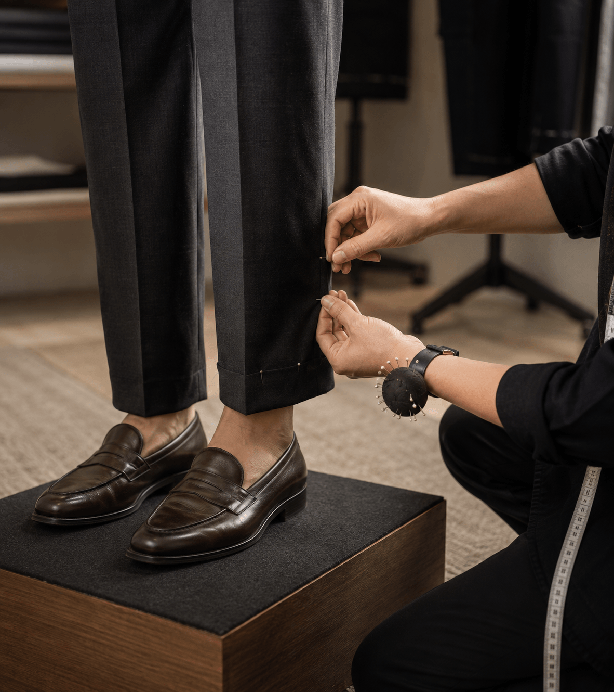
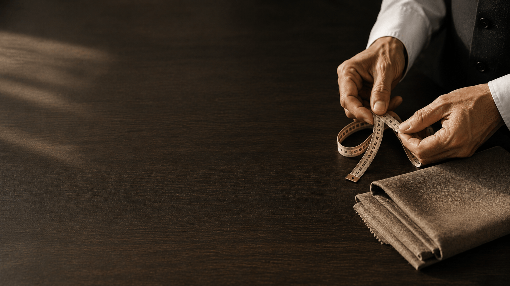

Before You
Begin Measuring
Accurate measurements are the foundation of a perfectly fitted garment. Before you pick up the tape, follow these preparation steps to ensure your numbers are as accurate as possible.
Wear fitted clothing or innerwear while measuring so the fabric lies close to your body without adding false inches.
Stand straight with your feet together in a relaxed, natural posture, breathing normally without pulling in your stomach.
Use a soft, flexible measuring tape and ask someone to assist for hard-to-reach shoulder and back measurements.
Women's
Measurement Points
These are the 9 key anatomical measurements required for women's bespoke garments, saree blouses, suits and dresses.

Bust
01Measure around the fullest part of your chest, keeping the tape parallel to the floor without compressing the body at any point.
Natural Waist
02Measure at the narrowest part of your waist, 2–3 inches above your hip bones, keeping the tape level. Exhale naturally before recording.
Full Hip
03Measure around the fullest part of your hips and seat, typically 8–9 inches below the waist with feet placed together and relaxed.
Shoulder Width
04Measure across the upper back from one shoulder tip to the other, following the natural curve. Best taken with assistance for accuracy.
Sleeve Length
05Measure from the shoulder tip down the outer arm, with the elbow slightly bent, to your desired sleeve end at wrist, elbow, or cap.
Garment Length
06Measure from the shoulder apex straight down to your desired hemline at knee, ankle, or floor level, keeping the tape vertical.
Neck Base
07Measure around the base of the neck where the collar or neckline sits, keeping the tape level. Add 1 inch for comfortable ease.
Blouse Back
08From nape of neck straight down the back to the desired hemline — crucial for saree blouses, fitted crop-top designs, and dresses.
Arm Circumference
09Measure around the fullest bicep point with the arm relaxed, leaving comfortable ease for fitted sleeves in silk or structured fabrics.
Men's
Measurement Points
Key measurements for men's shirts, suits, trousers and traditional wear, taken for master tailor pattern drafting.
Chest Width
01Measure around the fullest part of the chest beneath the arms, keeping the tape horizontal while breathing fully and naturally.
Waistband
02Measure around the natural waist where trousers are worn, typically 1–2 inches above the hip bones, keeping the tape level.
Seat / Hip
03Measure around the fullest part of the seat, about 8 inches below the waistband, keeping the tape level for an accurate trouser drape.
Collar Neck
04Measure around the base of the neck, allowing 0.5–1 inch of comfortable ease for securely fastening formal shirt collars every time.
Jacket Shoulder
05Measure from shoulder seam to shoulder seam across the upper back, following the natural curve for an accurately fitted jacket.
Sleeve Length
06Measure from shoulder tip to wrist bone with the arm slightly bent, ensuring the shirt cuff rests comfortably at the wrist joint.
Trouser Inseam
07Measure from the crotch seam down the inner leg to the ankle hemline, standing with feet hip-width apart and shoes removed for accurate length.
Jacket Length
08Measure from the back nape of the neck to the bottom of the seat for balanced, classic suit-jacket proportions and a clean drape.
Shirt / Kurta Length
09Measure from the back nape of the neck to the desired hemline, using mid-thigh for kurtas or hip level for neatly tucked-in shirts.

Upper Body
Measurement Tips
Upper body measurements directly affect the fit of blouses, shirts, jackets and suit shoulders. Even a small error here changes the entire garment's silhouette.
Keep arms slightly away from the body and breathe naturally. Run the tape parallel to the floor around the fullest part of the chest without angling it.
Ask someone to keep the tape flat across your upper back, measuring precisely from one shoulder point to the other.
Bend your arm slightly at the elbow. Measure from the shoulder tip over the bent elbow to the wrist bone for the most accurate sleeve length.
Lower Body
Measurement Tips
Lower body measurements are essential for trousers, skirts, salwar, lehengas and all garments worn at the waist and below. Take these with feet hip-width apart.
Find your natural waist by bending to one side — the crease that forms is your natural waist. Measure here, breathing normally.
Stand with feet together. Measure at the fullest point of the hips — typically 8–9 inches below the natural waist. Do not hold the tape too loosely.
Measure from the crotch seam down the inner leg to the ankle bone. Remove shoes for accuracy — shoe heel height affects perceived length.

Common Measurement
Mistakes
These are the most common measurement errors we encounter. Avoid them for accurate self-measurements.
Thick clothing adds 1–2 inches to measurements. Always measure in fitted innerwear or close-fitting clothing for best accuracy.
Chest and waist measurements taken while holding breath are often too small. Breathe normally and measure at the natural exhale.
A tape pulled tightly compresses the body and gives a smaller reading. The tape should lie flat against the skin, not indent it.
The measuring tape must remain horizontal (parallel to the floor) for circumference measurements. Even a slight angle changes the number.
Always record exact measurements. Rounding 33.5 to 34 or 35 adds unwanted ease and changes the garment's fit significantly.
Clients often send only bust and waist measurements. Hips are essential for skirts, trousers, salwar and garments worn at or below the waist.

Prefer a Professional
Measurement Session?
Visit our studio for a complimentary professional measurement session — 20 minutes, completely private. Your measurements are stored for future orders.